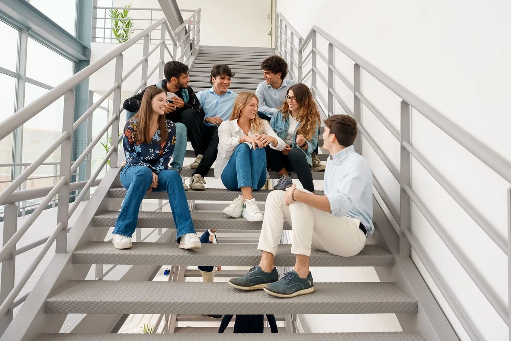
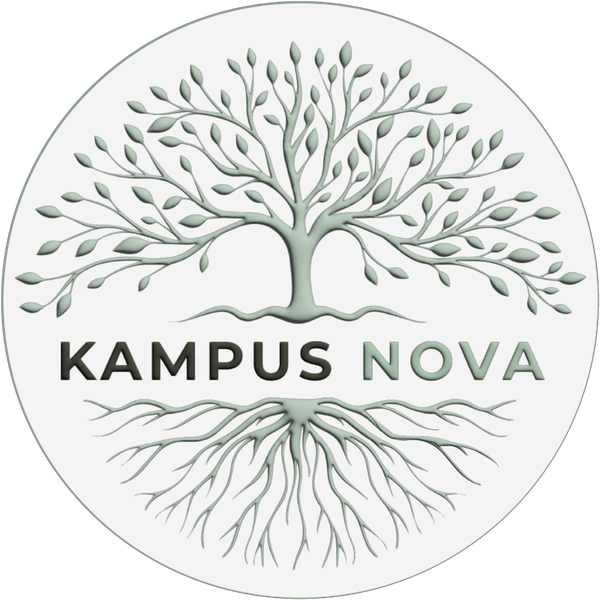
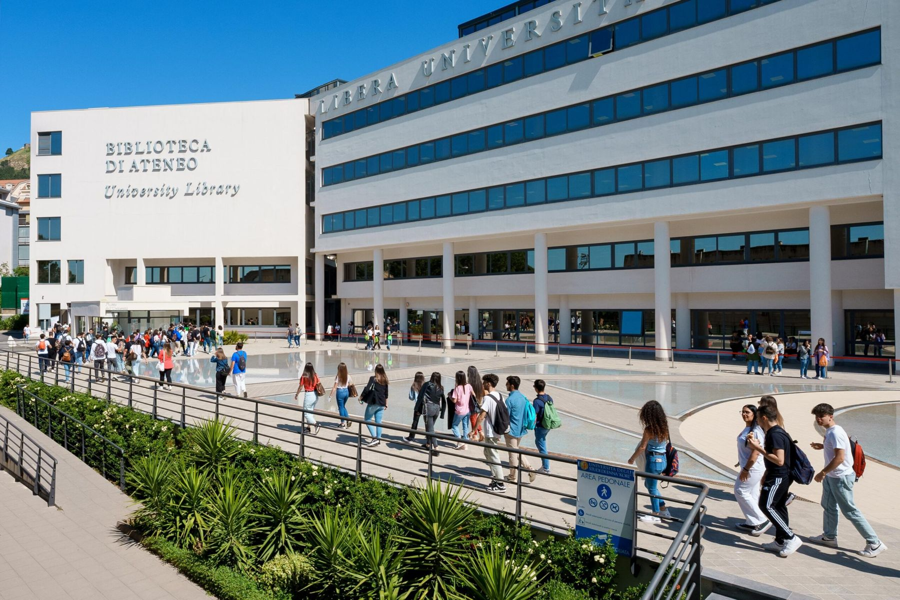
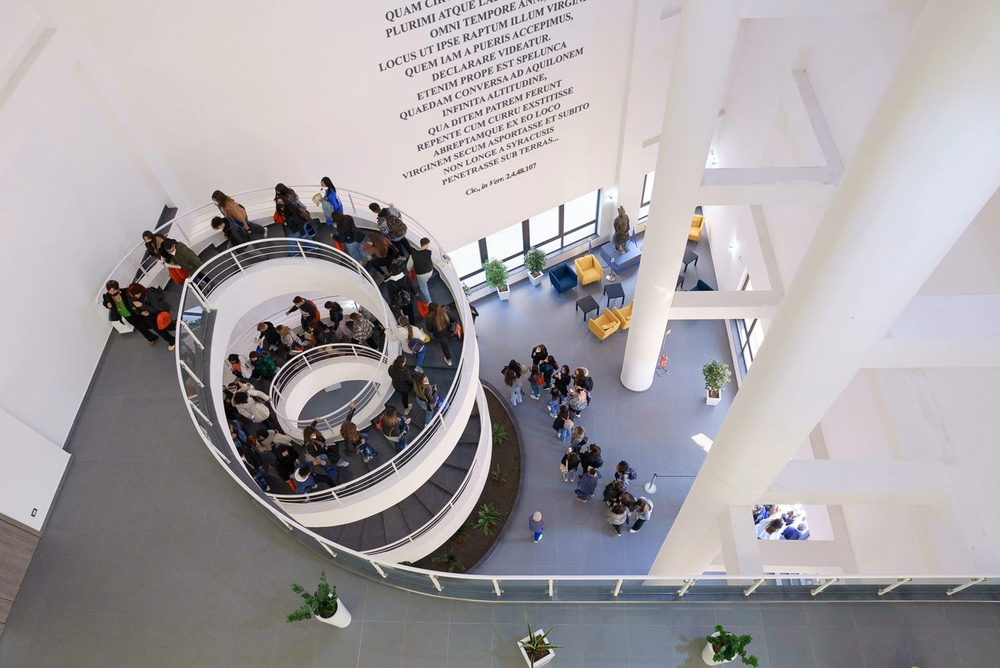
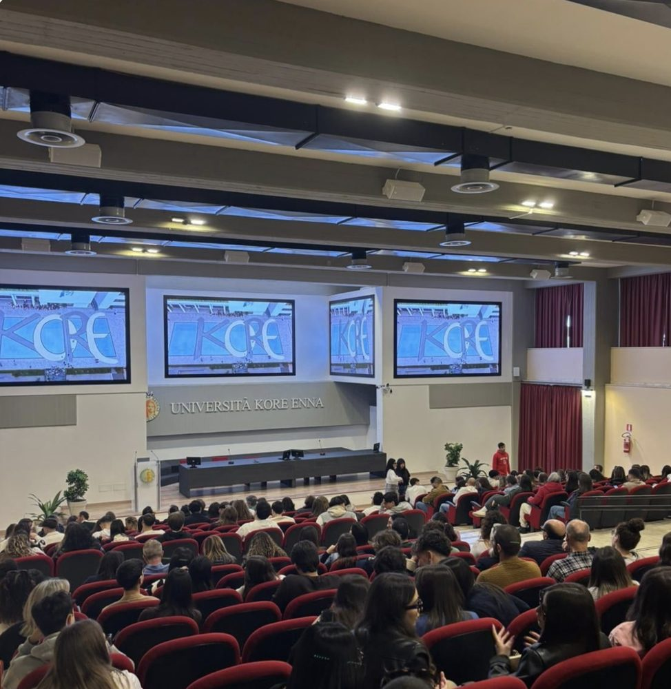
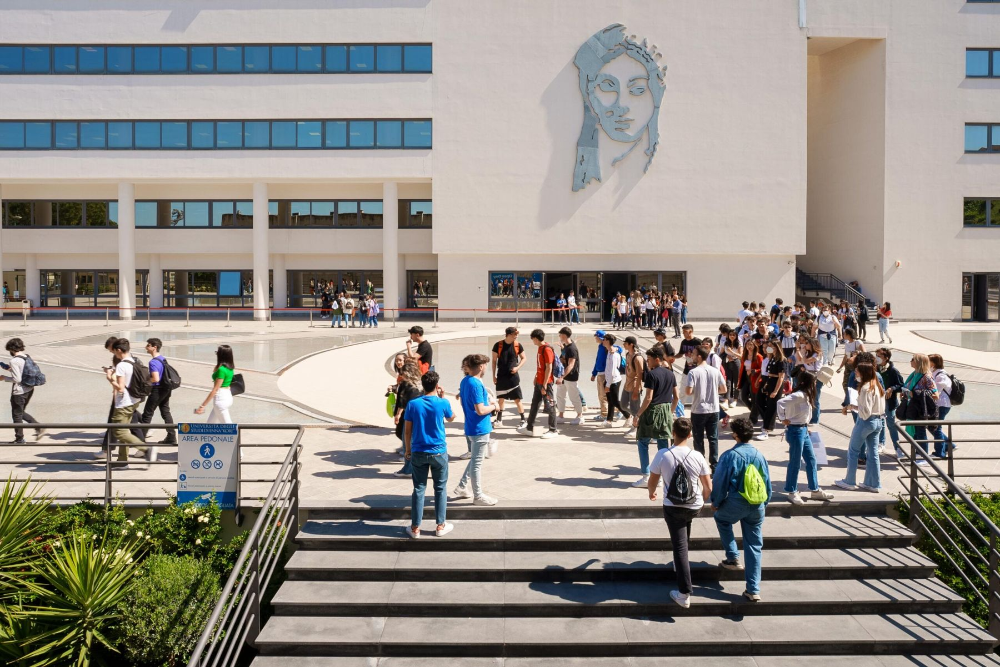

Chi siamo
La nostra storia
Kampus Nova nasce dall’evoluzione di Kampus, un’associazione studentesca che negli anni ha rappresentato con impegno e conoscenza la voce degli studenti all’interno dell’università.


Scopri le nostre proposte per i Dipartimenti


La nostra storia
Kampus Nova nasce dall’evoluzione di Kampus, un’associazione studentesca che negli anni ha rappresentato con impegno e conoscenza la voce degli studenti all’interno dell’università.

La nostra missione
La nostra missione è rappresentare, ascoltare e valorizzare gli studenti, portando le loro esigenze negli spazi decisionali dell’università.
Crediamo nella collaborazione e nel supporto reciproco. Per noi il successo non è individuale: cresce quando tutta la comunità studentesca cresce insieme.
Ci assumiamo la responsabilità delle idee che proponiamo e delle decisioni che prendiamo, lavorando con serietà per migliorare concretamente la vita universitaria.
Crediamo in una rappresentanza aperta e trasparente. Ascoltiamo gli studenti e promuoviamo il dialogo per costruire insieme le scelte che riguardano la nostra università.
Il logo di Kampus Nova nasce da un simbolo che racconta la nostra identità: l’albero, simbolo di crescita, solidità e comunità.
Le radici raccontano la nostra storia e il percorso costruito negli anni come Kampus.
Il tronco rappresenta la nostra identità e la nostra presenza all’interno dell’università.
I rami guardano al futuro e alle nuove opportunità per gli studenti.
Il verde simboleggia crescita ed equilibrio.
Nova come nuova luce, verso il futuro.
